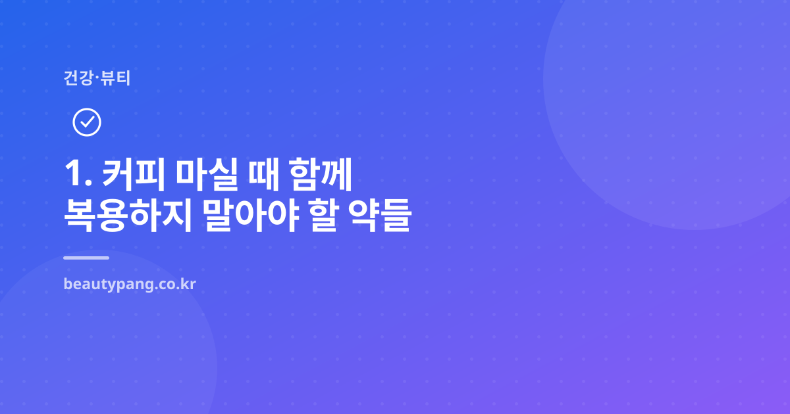

현대인의 필수 기호식품이 된 커피. 커피를 마시려면 반드시 식 후 두시간이 지나고 마시는게 좋습니다. 그 이유는 그렇게 해야 철분 등 영양소를 제대로 흡수할 수 있기 때문입니다. 약을 복용하고 있을 때 커피를 마시게 되는 관계도 마찬가지인데 커피는 약의 흡수, 분배, 대사, 그리고 배설에 영향을 미치기 때문에 약효를 최대한 얻으려면 약을 먹고 어느 정도 시간을 둔 다음 커피를 마시는 게 좋습니다. 약을 먹을 때 술을 마시지 말라고 하면 대부분이 지켜지는 반면에 커피를 마시지 말라고 하면 지켜지지가 않는다는 의견들이 많이 있습니다. 그만큼 커피에 대한 금단현상 겪는 사람들이 많다는 뜻입니다. 커피에 들어있는 대표적인 성분은 카페인인데 카페인은 각성작용과 중추신경 흥분작용이 있어 잠을 깨고 집중력을 높이는데 도움이 됩니다. 하지만 이뇨작용이 있고 혈압을 올리며 위장장애를 일으킬 수 있기 때문에 심혈관 질환자나 소화장애 환자는 복용을 삼가하는 것이 좋습니다. 오늘은 커피를 마실 때 절대 함께 복용하면 안되는 약들에 대하여 알아보도록 하겠습니다.
고혈압 약 중에는 소변을 통해 혈액 중 나트륨을 배설함으로써 혈압을 떨어뜨리는 종류가 있는데 이뇨 작용을 하는 약들입니다. 그런데 커피 속 카페인도 이뇨 작용을 하기 때문에 고혈압 약을 먹고 바로 커피를 마시면 이뇨 효과가 배가되어 화장실에 더 자주 갈 수 있습니다. 심부전 때문에 약을 복용하는 사람 역시 주의해야 합니다.
기침약으로 처방이 나오는 약 중에는 테오필린이나 테오브로민 같은 기관지확장제 약이 있습니다. 이 약들은 구조식이 카페인과 유사하지만 중추신경계 자극 효과가 거의 없고 이뇨작용이 약하며 기관지 평활근을 자극하는 효과만 쓰여 기침을 완화하는데 사용하는 약이지만 이 약과 커피를 같이 먹는 경우에는 중추신경 흥분 효과가 강해지고 혈압이 상승하여 불안, 초조, 두통 부작용이 나타날 수 있습니다. 또한 노약자나 심혈관계 질환자는 협심증이 나타날 수 있으니 기관지확장제 처방이 나온 경우에는 커피를 먹지 않도록 주의해야 합니다.
역시 약을 먹기 전후로 시간 간격 없이 커피를 마시지 않도록 신경을 써야 하는데 내과 전문의 퍼비 파렉 박사에 따르면 골다공증 약을 복용하고 무심하게 바로 커피를 마셨다간 노렸던 효과를 얻기 힘들 수 있다고 하였습니다.
보통 감기약을 먹으면 졸리기 마련인데 그 이유는 항히스타민제 때문입니다. 하지만 슈다페드 같은 감기약은 교감 신경을 흥분시키기 때문에 오히려 불면을 부를 수 있고 거기에 커피까지 마신다면 건강을 회복하는 데 꼭 필요한 휴식과 숙면을 망칠 수 있다는 사실을 기억해야 합니다.
우황청심원은 과도한 긴장감을 완하시키기 위하여 대표적으로 약국에서 사먹는 약중에 하나입니다. 이 부분에 있어서 전문가들도 의견이 조금 다를 수 있지만 함께 복용하면 안 된다는 의견이 조금 더 타당성이 있어 보이는 부분입니다. 그 이유는 커피는 교감신경을 흥분시키고 심박수를 빠르게 만들기 때문에 우황청심원 효과의 정확히 반대되는 효과를 나타내기 때문입니다. 그렇기 때문에 우황청심원을 먹어도 커피를 마시면 시험 전에 긴장감이 완화되지 못하고 불안해질 확률이 높으므로 최소한 과도한 긴장감을 유발하는 면접이나 시험등이 끝나기 전까지는 우황청심원을 먹은 후에 커피를 마시지 않는 것이 좋습니다.
눈떨림이나 근육 경직이나 다리에 쥐나는 현상 등을 치료할 때 보통 마그네슘을 보충할 것을 권합니다. 마그네슘은 천연 신경안정제이며 근육을 이완시키는데 도움을 주지만 마그네슘을 복용하는 동안 과도한 커피를 마시면 근육 이완 효과를 충분히 얻지 못하게 됩니다. 그 이유는 커피의 이뇨작용 때문에 섭취한 마그네슘의 대부분이 소변으로 빠져나가기 때문입니다. 또한 카페인의 교감신경 흥분 작용은 마그네슘의 안정효과를 방해하여 눈떨림 같은 문제를 치료하는데 방해가 되기 때문에 다리에 쥐가 나는 현상 혹은 눈떨림으로 마그네슘을 복용하는 동안에는 커피를 중단해야 최대한 빠르고 효율적으로 증상을 개선시킬 수 있습니다.
갑상선 약은 반드시 빈속에 먹어야 하는데 그렇게 해야 약을 온전히 흡수할 수 있기 때문입니다. 약을 먹은 후에도 최소 30분간은 커피를 포함해서 아무것도 먹지 말아야 합니다.
주의력 장애, 활동 항진, 충동 장애와 관련한 약을 먹고 있다면 커피는 되도록 마시지 않는 게 좋습니다. 파렉 박사에 따르면 커피 속 카페인이 약효를 얻지 못하도록 방해하기 때문입니다.
약은 항상 물과 마셔야 하는데 가끔 보면 커피나 다른 기타 음료와 함께 섭취하시는 분이 있습니다. 이는 잘못된 습관이니 반드시 고쳐야 하며 음식도 약도 건강하게 먹는 것이 중요합니다.
함께 보면 좋은 계산기